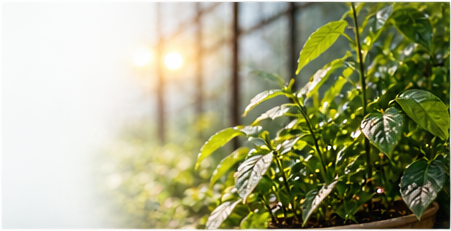

Tecnologia IoT
Como a IoT está transformando a agricultura
Descubra como sensores e dados podem aumentar a produtividade e reduzir desperdícios.
Ler maisCONTEÚDO QUE FAZ A DIFERENÇA
Dicas, tendências e informações sobre tecnologia, cultivo e gestão.
Descubra como sensores e dados podem aumentar a produtividade e reduzir desperdícios.
Ler mais
Veja práticas simples que fazem diferença no desenvolvimento das suas plantas.
Ler mais
Como unir estética, eficiência e cuidado com o meio ambiente.
Ler mais
Um guia simples para interpretar os dados e tomar melhores decisões.
Ler mais
Veja como temperatura, umidade e luminosidade influenciam o cultivo.
Ler mais